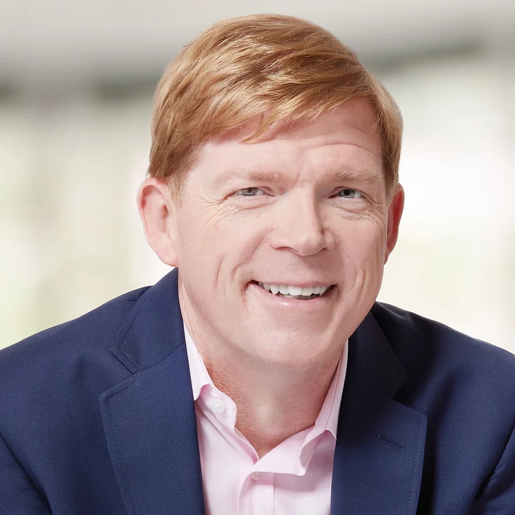

Brandon Carson
Founder
Read bio
For more than two decades, Brandon Carson has focused on one big question: How can learning unlock both business performance and human potential? He has built scalable learning strategies across some of the world's most complex and fast-moving organizations, from Fortune 50 giants to high-growth tech companies.
As Chief Learning Officer at Docebo, Brandon worked directly with customers to advise them on navigating AI implementation, including designing strategies and solutions to make learning a powerful driver of business impact and workforce growth.
Previously, he led enterprise learning transformations at Starbucks, Walmart, Delta Air Lines, The Home Depot, and Microsoft, developing programs that reached millions of employees worldwide and delivered measurable gains in performance, retention, and readiness for change.
Brandon is also the author of multiple books on the future of learning, a frequent keynote speaker at international conferences, and a trusted partner to leaders seeking to navigate disruption with clarity and purpose.
His mission is simple: to help organizations modernize learning so it drives measurable business value and makes work better for humans.